Willow Woods: Where I Belong and The Shadow Courtesan
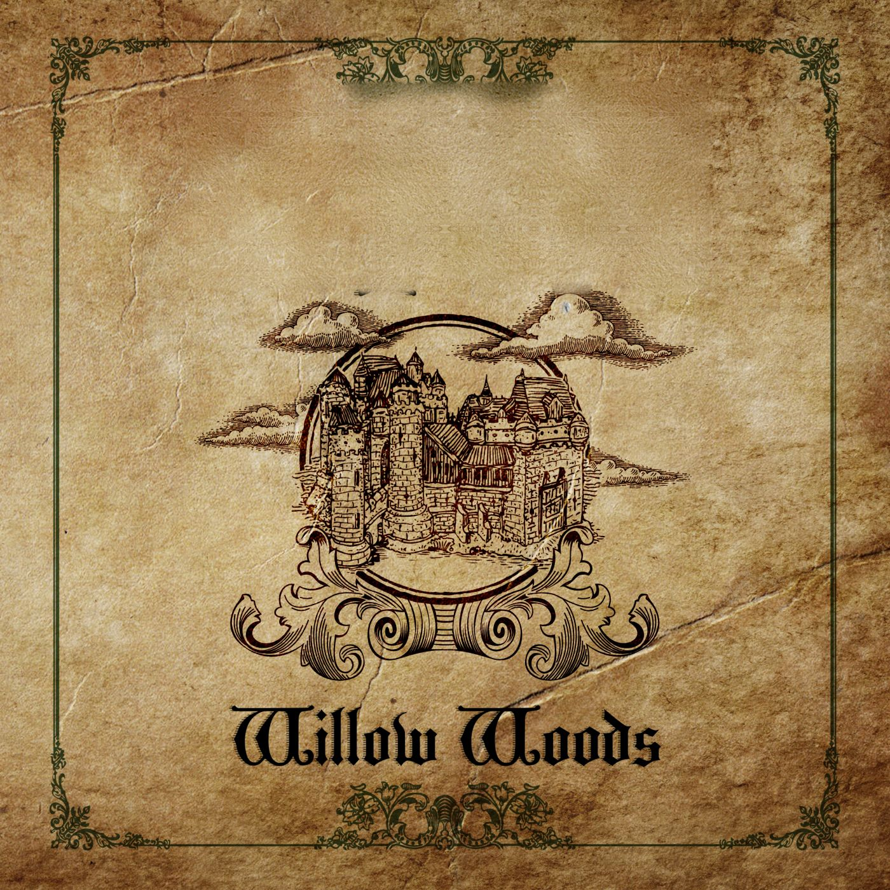
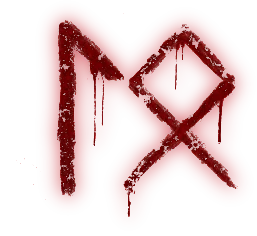
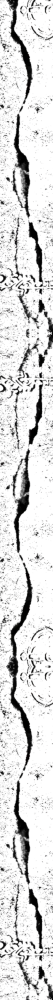
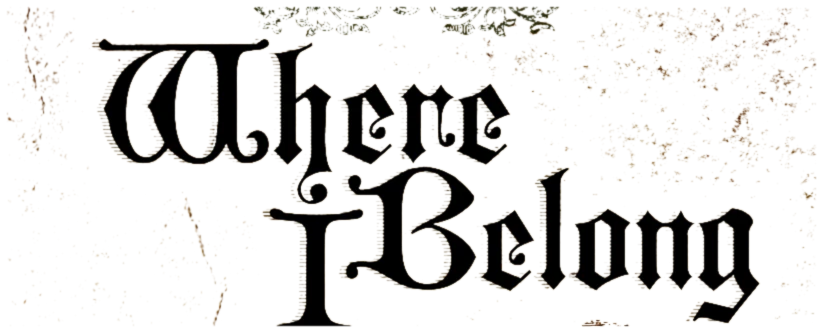
When all you know is forgotten, you can change a kingdom.
No mortal will tell of our tragedy.TenebraeSigned copies, 13 to 15 November
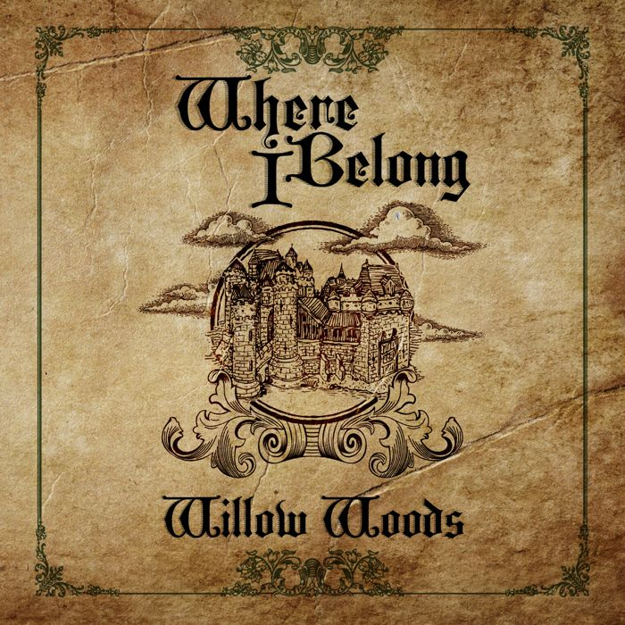
Where I Belong
After a spell goes awry, Alexandra finds herself married to the tyrannical Carlyle with no memory of her past or even her magical ability.
The Princess of Karstares is not free to marry for love. Thrust into the heart of a five-hundred-year-old rebellion led by a man who claims to be Saphyre's rightful king, she has to decide who Saphyre's true ruler is.
Paperback £10 from her own shop, or signed at her stall.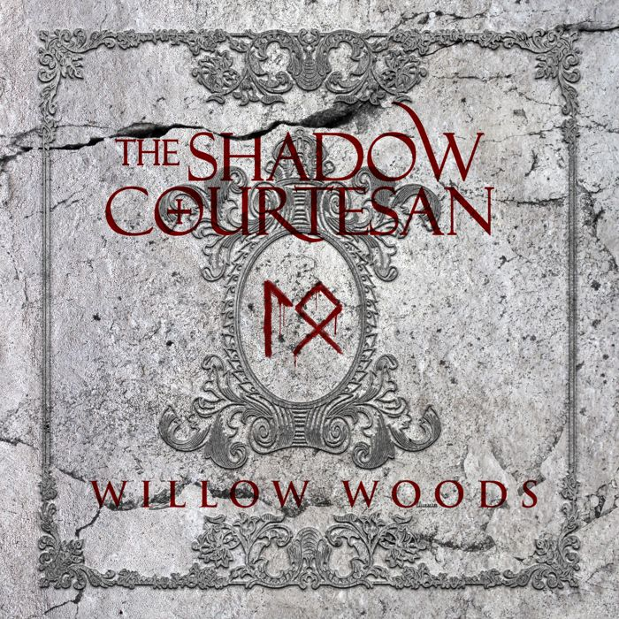
The Shadow Courtesan
Tenebrae: a world of darkness, trapped in the past, where vampires rule over their mortal slaves.
A century after seeing her home destroyed, Reina is forced back to the place she swore never to return to. Now a vampire herself, the very creature she loathes, she is determined to end slavery and destroy Tenebrae, until Master Vrykólakas gives her an impossible ultimatum.
Paperback £10 from her own shop, or signed at her stall.The world of Jadeus
Saphyre is an island kingdom. Evany, its capital, became the capital five hundred years ago when the Tioranach house took the throne, and Saphyre has lived under tyranny ever since, with those who have the Source favoured.
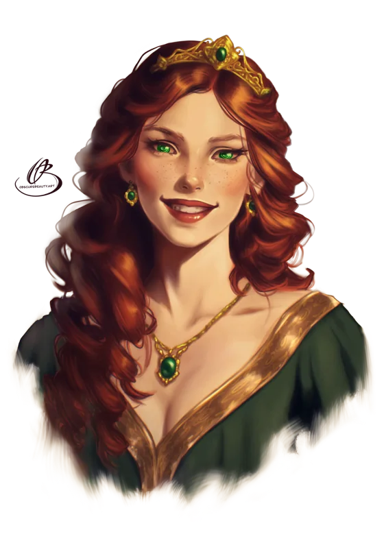
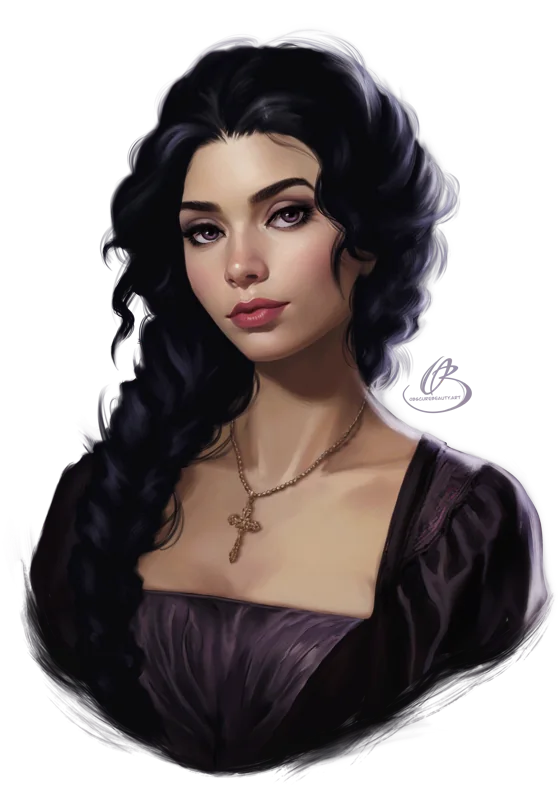
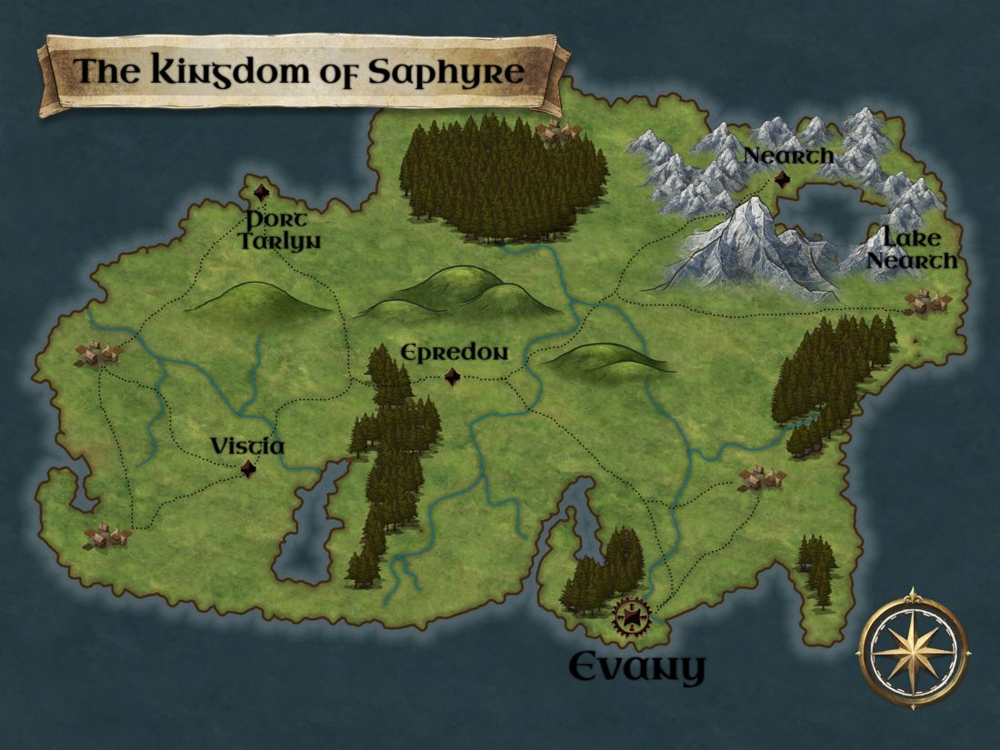
What she's writing
The Kingdom of Night
It's been over twenty years since the sun was last seen, and the kingdom of Noral survives on the blessing of the Source and strong alliances. The empire of Esteric waits for it to crumble.
"I cannot emphasise how much this is a working title!"Tears of Greece
A collection of short stories based on Greek mythology.
Short stories you can read now
The Gods' Wrath, in the shadow of Vesuvius, and The Sorrow of Spring, Anne Boleyn's last morning, 19 May 1536.
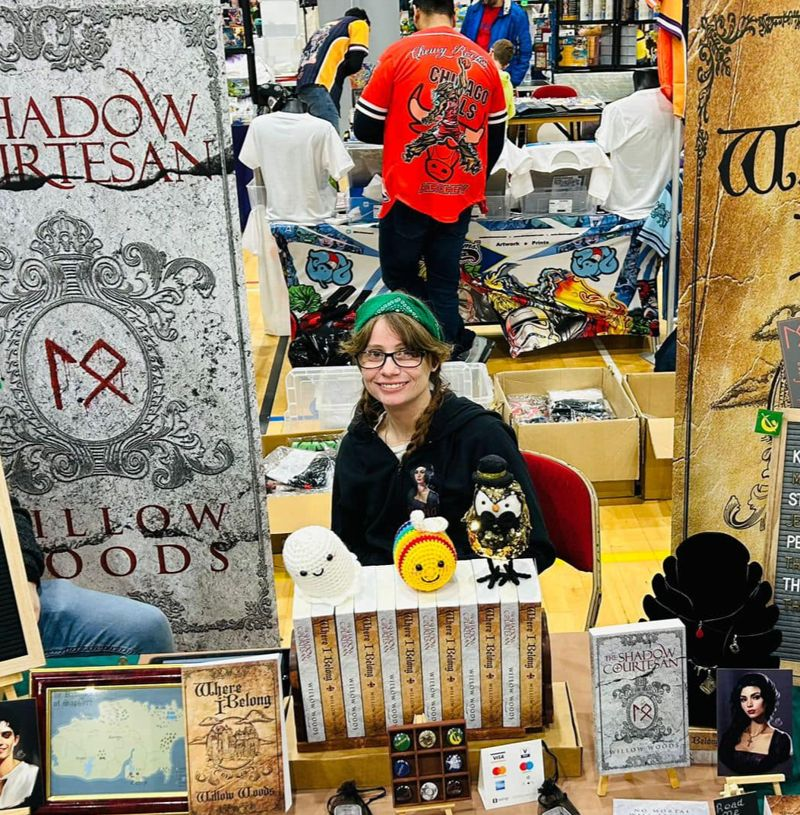
The stall
Signed paperbacks, bookmarks for each kingdom, stickers and character art, in person.
She's taking a break in 2026, with no more than five events for the year. This year so far:
- Farnham Indie Book Fair, Indie Voices, 7 March
- Craft & Flea Walthamstow, 29 March
- Makers & Indies Summer Market, Barnet, 20 June
- Fantasy Forest Libertalia, Hatfield House, 4 to 6 September
- MK Indie Book Fair, Milton Keynes, 26 September
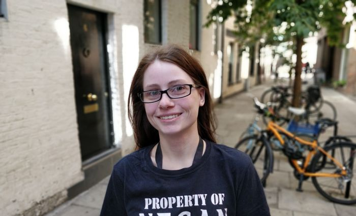
Willow Woods
Willow holds an MA in Historical Research, and much of her inspiration comes from history. She reads almost any genre, with fantasy and historical fiction her favourites.
She lives in North London with her husband and their three cats, Zorn, Thorn and Faithful. When she's not at events with her books she's part of a 12th century reenactment group, and she freely admits a Final Fantasy addiction. Also: archery, ninjutsu and the odd zombie run.
Aiséirí
resurrection
Her books are published as Aiséirí Publishing, named for her grandmother Anastasia, who was born and raised in Ireland before moving to England to raise their family.
Anastasia means "resurrection". In Irish, that's Aiséirí.
Buy direct from Willow